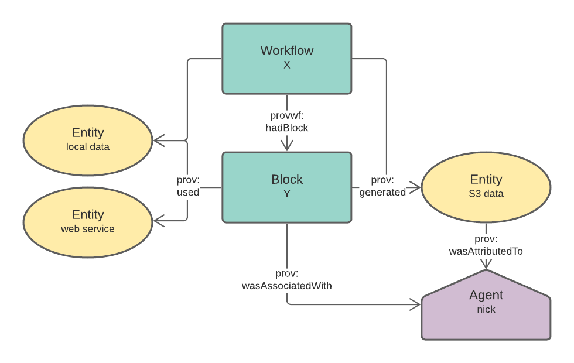
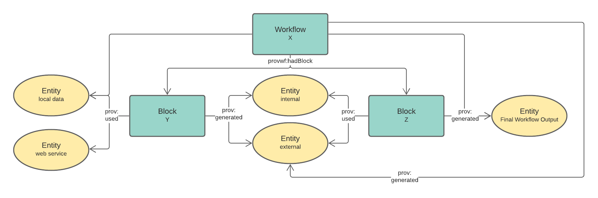

ProvWorkflow Ontology
Metadata
- URI
https://data.surroundaustralia.com/def/provworkflow/ontology- Imports
-
http://www.w3.org/2004/02/skos/core
http://www.w3.org/ns/prov-o
- Ontology RDF
- RDF (turtle)
Description
This Ontology defines a data model which is an extension to PROV-O, the Provenance Ontology. This model is designed to specify the outputs of ProvWorkflow tooling.
The intended use of this ontology is to provide the reference model, data according to which should be produced by application code in programming languages such as Python which will be written to enable executable workflows to report their actions in a PROV-O compatable way.
The additions to PROV-O made by this data model are designed to ensure the creation of well connected and well described PROV-O elements and also PROV-O element paterns that work well in data interoggation tooling, such as the SURROUND Ontology Platform.
Table of Contents
Overview
Classes ↑
Blockc
| URI | https://data.surroundaustralia.com/def/provworkflow/Block |
|---|---|
| Description |
A Block is a PROV Activity that is a part of a Workflow. Blocks use inputs and produce outputs. Some Block inputs and outputs are inputs and outputs to the Workflow as a whole while others are not seen at the Workflow level - where the outputs from one Block within a Workflow are consumed entirely by anothe rBlock within the Workflow. Block may be specialised in application code class/object hierarchies to create subclasses of Block. If this happens, subclasses of Block must be automatically identified by the application coding, i.e. new subclasses will not be added to this ProvWorkflow Specification. A Block must always have at least one input (an Entity that it uses, prov:used) at least one thing. The input can be a data location, an API endpoint, a literal value, a random number seed etc. A Block must always have at least one output (an Entity that it generates, prov:generated). The thing generated can be a file on a system, a state change in an existing digital asset etc. |
| Example |
 An example of a Block within a Workflow and with relations to Entity and Agent instances.
|
| Example |
:block_x
a profwf:Block ;
skos:prefLabel "Block X" ;
skos:defintion "A Block to do X" ;
prov:used :entity_h ;
prov:generated :entity_j ;
prov:startedAtTime "2020-12-18T12:30:16+10:00"^^xsd:dateTimeStamp ;
prov:endedAtTime "2020-12-18T12:30:20+10:00"^^xsd:dateTimeStamp ;
.
entity_h
a prov:Entity ;
skos:note "A Web Service to access data" ;
dcat:accessURL <http://some-url.org/service/x> ;
.
:entity_j
a prov:Entity ;
skos:note "A literal entity - integer" ;
prov:value 42 ;
.
|
| Super-classes |
prov:Activityc |
| Restrictions |
prov:endedAtTime only xsd:dateTimeStampc prov:startedAtTime exactly 1 prov:endedAtTime exactly 1 prov:generated min 1 owl:versionIRI only xsd:anyURIc owl:versionIRI min 1 prov:used min 1 prov:startedAtTime only xsd:dateTimeStampc |
| In range of |
pwf:hadBlockop |
Provenance Reporterc
| URI | https://data.surroundaustralia.com/def/provworkflow/ProvReporter |
|---|---|
| Description |
A Provenance Reporter is an OWL Thing that reports PROV-O provenance for it, relevant to its PROV type. The Provenance Reporter class is the superclass of all PROV classes (Entity, Activity, Agent) and should not be used (have instance of it created) directly, instead instances should be created of is subclasses, particularly Workflow & Block (transitive subclasses of it by virtue of bieng subclasses of prov:Activity). The intention of ProvReporter is to act as a top class for the ProvWorkflow specification, as needed by tools such as EDG/SOP. |
| Super-classes |
owl:Thingc |
| Sub-classes |
prov:Entityc prov:Activityc prov:Agentc |
Workflowc
| URI | https://data.surroundaustralia.com/def/provworkflow/Workflow |
|---|---|
| Description |
A Workflow is a PROV Activity that contains one or more Blocks. Workflows represent a complete system task that will likely be composed of multiple steps that should be represented by Blocks. A Workflow may be manually-triggered (by a human) or by an external system event or schedule. A Workflow must always have at least one input (an Entity that it uses, prov:used) at least one thing. The input can be a data location, an API endpoint, a literal value, a random number seed etc. A Workflow must always have at least one output (an Entity that it generates, prov:generated). The thing generated can be a file on a system, a state change in an existing digital asset etc. Workflows' inputs and outputs should be automatically derived from the Blocks within the Workflow and no Workflow input our output should exist that is not also an input/output to a Block within that Workflow. |
| Example |
 An example of a Workflow with contained Block instances and with relations to Entity instances at both the Workflow and Block levels.
|
| Example |
# a minimal Workflow instance
:workflow_a
a profwf:Workflow ;
skos:prefLabel "Workflow A" ;
skos:defintion "A Workflow to do A" ;
pwf:hadBlock :block_x , :block_y ;
prov:used :entity_h , :entity_i ;
prov:generated :entity_k ;
prov:startedAtTime "2020-12-18T12:30:15+10:00"^^xsd:dateTimeStamp ;
prov:endedAtTime "2020-12-18T12:30:25+10:00"^^xsd:dateTimeStamp ;
.
:block_x
a profwf:Block ;
skos:prefLabel "Block X" ;
skos:defintion "A Block to do X" ;
prov:used :entity_h ;
prov:generated :entity_j ;
prov:startedAtTime "2020-12-18T12:30:16+10:00"^^xsd:dateTimeStamp ;
prov:endedAtTime "2020-12-18T12:30:20+10:00"^^xsd:dateTimeStamp ;
.
:block_y
a profwf:Block ;
skos:prefLabel "Block Y" ;
skos:defintion "A Block to do Y" ;
prov:used , :entity_i , :entity_j ;
prov:generated :entity_k ;
prov:startedAtTime "2020-12-18T12:30:16+10:00"^^xsd:dateTimeStamp ;
prov:endedAtTime "2020-12-18T12:30:20+10:00"^^xsd:dateTimeStamp ;
.
# :entity_j is not reported at the Workflow level since it is entirely internal
# having been generated by :block_x and used by :block_y
|
| Super-classes |
prov:Activityc |
| Restrictions |
prov:endedAtTime only xsd:dateTimeStampc prov:generated min 1 owl:versionIRI min 1 pwf:hadBlockop min 1 owl:versionIRI only xsd:anyURIc prov:used min 1 prov:startedAtTime exactly 1 prov:startedAtTime only xsd:dateTimeStampc prov:endedAtTime exactly 1 |
| In domain of |
pwf:hadBlockop |
Object Properties ↑
hadBlockop
| URI | https://data.surroundaustralia.com/def/provworkflow/hadBlock |
|---|---|
| Domain(s) | pwf:Workflowc |
| Range(s) | pwf:Blockc |
Namespaces ↑
- :
https://data.surroundaustralia.com/def/provworkflow/ont- owl
http://www.w3.org/2002/07/owl#- prov
http://www.w3.org/ns/prov#- pwf
https://data.surroundaustralia.com/def/provworkflow/- rdf
http://www.w3.org/1999/02/22-rdf-syntax-ns#- rdfs
http://www.w3.org/2000/01/rdf-schema#- sdo
https://schema.org/- skos
http://www.w3.org/2004/02/skos/core#- xsd
http://www.w3.org/2001/XMLSchema#
Legend
| c | Classes |
| op | Object Properties |
| fp | Functional Properties |
| dp | Data Properties |
| dp | Annotation Properties |
| p | Properties |
| ni | Named Individuals |